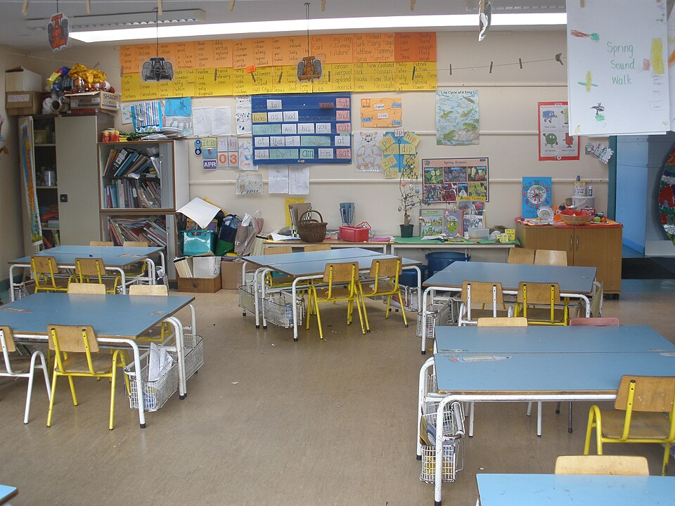

책상을 모둠 단위로 붙여 놓은 학교 교실 (이미지) · 사진: User:O'Dea / Wikimedia Commons, CC BY-SA 4.0
국제학교 그룹 프로젝트(모둠 과제)와 발표 평가 — 영어가 아니라 "역할"에서 막힙니다
1. 먼저 — 그룹 과제의 점수는 하나가 아닙니다
한국 학교의 모둠 수행평가는 대개 결과물 하나에 점수 하나입니다. 그래서 학부모님은 국제학교의 그룹 과제도 같겠거니 생각하십니다. 그런데 국제학교의 많은 과목은 점수를 나눠서 봅니다.
· 결과물에 매기는 점수 — 조가 함께 만든 보고서·포스터·실험 결과·슬라이드.
· 개인이 맡은 부분에 매기는 점수 — 내가 쓴 문단, 내가 만든 그래프, 내가 발표한 구간.
· 과정에 매기는 점수 — 회의 기록, 계획표, 중간 점검, 마지막에 쓰는 성찰문.
세 가지가 모두 있는 과목도 있고 하나만 있는 과목도 있습니다. 어느 쪽인지는 교사가 나눠 준 채점 기준표에 적혀 있습니다. 그래서 아이가 "그룹 과제 시작했다"고 말한 날, 부모님이 물어보실 첫 질문은 "주제가 뭐야"가 아니라 "채점 기준표 받았어? 개인 점수가 어디야?" 입니다. 평가의 종류 자체가 헷갈리신다면 형성평가·총괄평가 구분을 먼저 보셔도 좋습니다.
2. 한국 학생이 막히는 다섯 장면
① 첫 회의에서 남는 역할을 받는다
가장 흔한 장면입니다. 조가 만들어지고 5분 안에 역할이 정해지는데, 아이가 머뭇거리는 사이 말이 빠른 친구들이 발표·정리를 먼저 가져갑니다. 남는 건 자료 조사입니다. 자료 조사가 나쁜 역할은 아니지만, 채점 기준표에서 점수가 많이 걸린 항목이 아닌 경우가 많습니다.
② 반대 의견을 말할 문장이 없다
아이가 다른 의견을 갖고 있어도 어떻게 끼어드는지를 모르면 그냥 넘어갑니다. 영어를 잘하는 아이도 이 부분은 따로 배웁니다. "I see your point, but…" 같은 회의용 문장 몇 개가 손에 있는지 없는지가 참여도를 가릅니다.
③ 한 일이 기록에 안 남는다
아이는 분명히 많이 했는데 남은 것이 없습니다. 조 문서에 누가 무엇을 언제 썼는지 흔적이 없으면, 나중에 억울한 일이 생겨도 교사가 확인할 방법이 없습니다. 공유 문서에 자기 이름을 붙여 쓰는 습관이 그래서 중요합니다.
④ 무임승차 친구를 혼자 감당한다
조원이 일을 안 할 때 한국 학생은 대개 혼자 다 해 버립니다. 그러면 결과물은 좋아지지만 과정 점수와 성찰문에서 불리해질 수 있고, 무엇보다 다음 조에서 같은 일이 반복됩니다. 이럴 때 필요한 건 인내가 아니라 교사에게 알리는 문장입니다. 고자질이 아니라 진행 상황 보고의 형식으로 말하면 됩니다.
⑤ 발표를 통째로 외운다
외운 발표는 질문 하나에 무너집니다. 많은 채점 기준표가 발표 자체와 별개로 질문에 답하는 능력을 봅니다. 외우는 시간을 줄이고 예상 질문에 쓰는 편이 점수에 유리합니다.
3. 집에서 도울 수 있는 것과 없는 것
그룹 과제는 부모님이 손대기 어려운 영역입니다. 도와도 되는 선과 넘으면 안 되는 선을 구분해 두셔야 합니다. (자세한 기준은 학문적 정직성 참고)
| 상황 | 도와도 되는 것 | 하시면 안 되는 것 |
|---|---|---|
| 역할 정하기 | 어떤 역할이 점수와 연결되는지 함께 읽기 | 교사·조원에게 부모가 직접 역할 요구 |
| 자료 조사 | 출처를 확인하는 방법 알려 주기 | 부모가 자료를 찾아 정리해 주기 |
| 글쓰기 | 구조가 맞는지 질문으로 되짚기 | 문장을 대신 써 주거나 번역해 주기 |
| 슬라이드 | 글자 수가 많은지 봐 주기 | 부모가 디자인을 완성해 주기 |
| 발표 연습 | 청중이 되어 주고 시간 재기 | 대본을 써 주고 외우게 하기 |
| 조원 문제 | 아이가 교사에게 말할 문장을 함께 만들기 | 부모가 다른 집에 연락해 항의하기 |
표의 오른쪽 칸은 단순한 예의 문제가 아닙니다. 대신 해 준 결과물은 아이의 점수가 아니고, 학교에 따라서는 부당한 도움으로 보기도 합니다. 도움의 방향은 늘 같습니다. 결과물이 아니라 아이의 방법을 손보는 쪽입니다.
4. 발표 평가에서 점수를 잃는 곳
· 슬라이드에 글이 너무 많다. 읽으면 되는 화면은 말하기 점수를 주기 어렵습니다. 슬라이드는 근거로 쓰고, 설명은 입으로 합니다.
· 시간을 못 맞춘다. 시간 초과는 많은 기준표에서 직접 감점 대상입니다. 연습을 시간 재면서 하셔야 합니다.
· 질문에 얼어붙는다. 예상 질문 세 개만 준비해도 크게 달라집니다. 모르면 모른다고 말하고 어디서 확인하겠다고 덧붙이는 편이 침묵보다 낫습니다.
· 내 구간이 아닌 곳은 손을 놓는다. 조원이 발표할 때의 태도도 보입니다. 화면을 함께 보고 반응하는 것만으로도 인상이 달라집니다.
· 출처를 안 밝힌다. 그림·자료의 출처를 빠뜨리면 발표 내용과 무관하게 감점되거나 정직성 문제로 번질 수 있습니다.
5. 그래서 이렇게 준비합니다 — 네 단계
1단계 · 시작한 날 — 채점 기준표를 함께 읽고 개인 점수 항목에 형광펜을 칠합니다. 여기가 아이가 지켜야 할 자리입니다.
2단계 · 첫 회의 전날 — 아이가 먼저 말할 역할을 하나 정해 둡니다. 그리고 회의에서 쓸 문장 서너 개를 소리 내어 연습합니다.
3단계 · 진행 중 주 1회 — "이번 주에 네가 문서에 남긴 게 뭐야?" 한 줄만 물어봅니다. 남긴 게 없으면 그 주에 한 일이 사라진 것입니다.
4단계 · 발표 3일 전 — 슬라이드별 한 문장 메모, 예상 질문 세 개, 시간 재기. 이 세 가지면 충분합니다.
과외에서 이 과제를 다룰 때도 방식은 같습니다. 내용을 대신 만들어 주는 것이 아니라, 기준표를 함께 읽고 아이가 맡은 부분의 구조를 잡아 주고, 발표 구간을 리허설해 주는 식입니다. 특히 영어로 긴 설명을 해야 하는 과목은 영어 공부법에서 다룬 글의 구조 훈련이 그대로 쓰입니다. 수학·과학 과제라면 과정을 문장으로 적는 연습이 함께 갑니다. (알지브라 공부법 참고)
6. 커리큘럼별로 조금씩 다릅니다
· IB — 중등 구간(MYP)에서 기준표 채점이 본격화되고, 과제에 성찰이 붙는 경우가 많습니다. 고등 디플로마 구간에서는 개인 장기 과제의 비중이 커집니다. → IB DP 점수 · IB 전 과정 구조
· 미국식·AP — 과목별 비중표 안에서 프로젝트가 한 칸을 차지하는 형태가 흔합니다. → AP 과목 선택 가이드
· 영국식·IGCSE·A-Level — 외부 시험 비중이 커서 모둠 과제가 성적에 들어가는 폭은 상대적으로 좁을 수 있습니다. 다만 수업 중 평가로는 계속 쓰입니다. → IGCSE 과목 선택 · A-Level 과목 선택
어느 쪽이든 원칙은 같습니다. 기준표를 먼저 읽고, 개인 점수 항목을 지키고, 한 일을 기록으로 남긴다. 학교 플랫폼에서 무엇이 보이고 무엇이 안 보이는지는 학습 플랫폼·시간표 읽는 법에, 성적표에 어떻게 반영되는지는 성적표 읽는 법에 정리해 두었습니다.
정리
국제학교의 그룹 과제에서 아이가 손해를 보는 이유는 대개 영어가 부족해서가 아니라 역할을 늦게 고르고, 한 일을 남기지 않아서입니다. 그리고 이 둘은 연습으로 고쳐지는 기술입니다. 채점 기준표에서 개인 점수 항목을 찾고, 첫 회의에서 역할을 먼저 가져가고, 주 1회 남긴 것을 확인하는 세 가지만으로도 다음 과제의 결과가 달라집니다. 아이가 지금 어느 지점에서 막히는지 모르겠다면 30분 무료 상담으로 함께 짚어 보세요.